Subject matter
Pharmaceutical and drug development research organizations produce many effective treatments that address debilitating diseases and save and improve millions of lives
Relevance
How does CYBERNETIC DIALYSIS help?
Need
Use and impact of this technology
Technology
How does CYBERNETIC DIALYSIS work?
CYBERNETIC DIALYSIS has three main components:
Laboratory experiment that performs testing with blood or plasma containing drug at relevant therapeutic concentrations, in a range of conditions such as filters, dialysates, buffers and durations
Build a model for pharmacokinetics of drug administered in human with normal renal function and no dialysis

Incorporate and add a dialysis compartment into the human pharmacokinetic model to simulate a range dialysis systems with dialysis parameters set to realistic conditions that are commonly used in patients undergoing dialysis in clinical practice
Application
Pharmaceutical companies developing new drugs can utilize this method to identify and assess the effect of dialysis on their investigational drug early in the development process (along with Phase 1 studies) to gather adequate information and confidence to allow dialysis patients in Phase 2 or Phase 3 studies, or at least provide some guidance for dosing in the drug prescribing information based on CYBERNETIC DIALYSIS results. At present, most Phase 2 and Phase 3 studies routinely exclude patients receiving dialysis and there is little to no guidance for dosing dialysis patients at the time of drug registration for marketing because, at least in part, there is no information on the effect of dialysis on the investigational drug
Approved drugs that are on the market often for years that have little to no information or guidance on how to use the drug in patients receiving dialysis concomitantly. Research organizations can benefit from employing CYBERNETIC DIALYSIS to characterize and provide guidance on such concomitant use
Interested in CYBERNETIC DIALYSIS?
Contact us to discuss your programme and how CYBERNETIC DIALYSIS can support dose guidance for patients receiving dialysis.